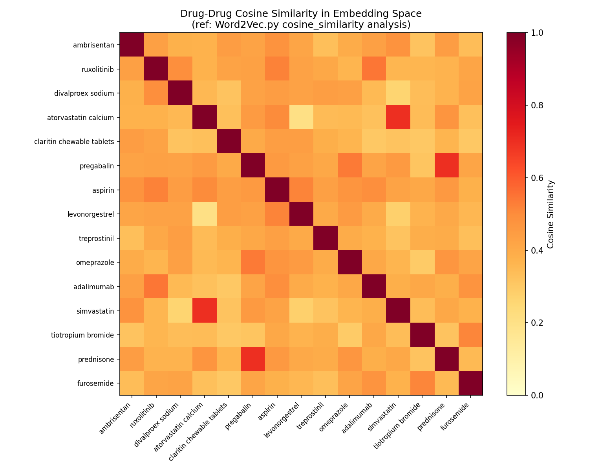

Emily Chen
M.S. Data Science @ UCSD
Hi! I'm Emily, an M.S. Data Science candidate at UC San Diego's Halıcıoğlu Data Science Institute, focusing on Artificial Intelligence and Data & Society. I hold a B.S. in Applied Mathematics with a Computer Science minor from UCSD's Jacobs School of Engineering.
I build scalable data pipelines, multi-model database systems, and interactive tools that turn complex data into clear recommendations. I currently TA Data Management (DSC 100) and previously studied text representation models as a Graduate Researcher at UCSD.
Outside of tech, I like to take long walks around the beach, enjoy a good coffee, and craft gifts for my loved ones.
Projects
Building a reproducible multi-config RAG pipeline (LangChain + RapidFire AI) over RapidFire AI documentation dataset, evaluated with a 45-question hand-labeled golden set scored via span-overlap retrieval metrics (Precision@5, Recall@5, F1@5) and LLM-as-judge generation metrics (Correctness, Faithfulness, Completeness) under a 2,000-token context budget.
Built a Dockerized ETL pipeline ingesting 500+ openFDA FAERS reports and 16 Synthea EHR tables into 4 polyglot databases (PostgreSQL, Neo4j, Qdrant, MongoDB), encoding clinical narratives as 768-dim BioLORD-2023 embeddings. Reduced drug-interaction checks from O(N²) SQL self-joins to O(1)-per-hop Neo4j traversals and shipped a 5-tab Streamlit dashboard unifying 4 parallel database queries into a 3-tier risk report with full audit traceability.

Engineered PCA-reduced hourly pickup profiles and tuned an XGBoost classifier across 131K NYC taxi trips, lifting accuracy 0.62 → 0.95 and macro-F1 0.62 → 0.94 (minority green-taxi recall 0.45 → 0.88), validated with a 30-replicate bootstrap (95% CI ±0.004). Streamlined AWS S3 retrieval across 400+ parquet files, cutting pipeline latency from 30 min to under 10 min.

Ranked top 22% of 1,600 colleagues in a competitive ML evaluation by designing and optimizing predictive models for binary classification, multi-class classification, and regression under performance and validation constraints. Increased categorical prediction accuracy by ~120% through feature engineering, hyperparameter tuning, and transformer-based embeddings.

Analyzed the relationship between San Diego Blue Line Trolley stops, surrounding property values, police station proximity, and crime incident rates; produced an interactive Tableau dashboard for stakeholder-facing insights.
Awards & Recognition
Awarded for serving as a graduate TA in the Halıcıoğlu Data Science Institute.
Awarded for academic excellence and leadership potential during undergraduate studies.
Awarded multiple quarters for maintaining quarterly GPA in the top percentile of the college.
Won first place in the Backpack to Briefcase professional debate competition, earning a $100 cash prize for argumentation, delivery, and rebuttal under time pressure.
Passed both the Theory and Technique/Repertoire components of the Las Vegas Music Teachers Association's Chase-Riecken Musicianship Exam at Level 10.
Somewhere Between Commits...